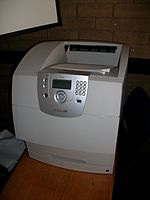

Ütő nyomtatók Gömbfejes és margarétafejes nyomtatók: csak a gyári fejen lévő fix karakterkészletet tudják alkalmazni, ugyanúgy, mint az írógépek. Kis sebességgel, de viszonylag szép képet nyomtatnak. Láncos, írórudas, írókorongos, íróhengeres nyomtatók: egyszerre egy egész sort tudnak nyomtatni, ezeket nevezzük sornyomtatóknak. Mátrixnyomtatók: a mátrixnyomtató az írógép továbbfejlesztett változata. A nyomtatófejben apró tűk vannak (általában 9 vagy 24 db). A papír előtt egy kifeszített festékszalag mozog, amelyre a tűk ráütnek, és létrehoznak a papíron egy pontot. A kép ezekből a pontokból fog állni. A tűket elektromágneses tér mozgatja, és rugóerő húzza vissza eredeti helyükre. Ezzel az eljárással nem csak karakterek, hanem képek, rajzok is nyomtathatóak. A nyomtatott képek felbontása gyenge, de ahol nem szükséges a jó minőség, ott ma is használják, mert olcsó és alkalmas indigós számlanyomtatásra. Egyes mátrixnyomtatók képesek színes nyomatok készítésére is, de ezek minősége igen alacsony. A mátrixnyomtatók több üzemmódban tudnak nyomtatni: Piszkozati (Draft): a piszkozati minőség a tűk egyszeri leütésével készül, és nem túl szép képet ad. Közel levél minőségű (NLQ, Near Letter Quality): ez már egy szebb képet adó üzemmód, a tűk többszöri leütésével hozza létre a képet. Levélminőségű (LQ, Letter Quality): legalább 18 tűsnek kell ahhoz lennie a nyomtatónak, hogy ilyen minőségben nyomtasson, és az így készített kép igen jó minőségű, de nagyon hosszú ideig tart a kinyomtatása. Nem ütő nyomtatók Hőnyomtató: a hőnyomtató speciális papírtekercset, ún. hőpapírt használ. Ennek az a tulajdonsága, hogy a fehér bevonata hő hatására megfeketedik. Ennek a papírnak nyomódik neki az írófej. A fejen a képpontoknak megfelelő kis ellenállások helyezkednek el. Ott ahol az ellenállást elektromos árammal melegítik, ott a papír megfeketedik. A fej a mátrixnyomtatókhoz hasonlóan mozoghat jobbra balra, de lehet fix is, ekkor azonban a papírt teljes szélességében le kell fedni. Előnye a nagy élettartam és a „végtelen színezőanyag”. Hátránya a hozzávaló papír viszonylag drága, minősége gyenge, hőmérséklet és napfény ellen védeni kell a kinyomtatott dokumentumot. Létezik színes változata is, bár nagyon ritka, ennek működési elve azon alapszik, hogy a bevonatban található speciális pigmentkombináció különböző hőfokú és időtartamú hevítés esetén több (általában három) különböző színt képes felvenni. Rajzgépek vagy plotterek: a rajzgéppel vektorgrafikákat lehet papírra rajzolni. A rajzgép egy tollat mozgat a papíron. A rajzgépeket nagyméretű műszaki rajzok (CAD) papírra vitelénél, a számítógépes tervezésben használják, bár egyre inkább felváltják őket az univerzális nyomtatók, amelyek már elegendően nagy méretben (A0, roll) is képesek a nyomtatásra.
Lézernyomtató: a lézernyomtatóban speciális, fényérzékeny anyaggal bevont és elektromosan feltöltött henger található. Ezen egy lézersugárral jelölik meg a nem fehér pontokat: ahol a lézer a hengerhez ér, ott a henger semleges lesz vagy ellentétesen lesz töltött a henger többi részéhez képest. Amikor pedig a henger a festékrésszel érintkezik, akkor azokra a részekre tapad festék, melyeket ért a lézersugár. A festék ezután átkerül a papírra, majd beleolvad, mikor a papír áthalad egy 200 °C-os hengerpár között. A színes lézernyomatóban lényegében négy közönséges lézernyomtató mechanikája épül egybe, és az egyetlen fényérzékeny hengerükre a világoskék (cián), lila (bíbor), sárga és fekete festékhengerekről egymás után kerülnek fel a színek. A négy színnel való átfestéshez a lézersugárnak négyszer kell végigfutnia a fényérzékeny hengeren. Tintasugaras nyomtató: a tintasugaras nyomtatók tintapatronok segítségével tintacseppeket juttatnak a papírlapra. A patronban van egy porlasztó, ez megfelelő méretű tintacseppekre alakítja a tintát, és a papírlapra juttatja azt. A színes tintasugaras nyomtató színes tintapatronokat használ, általában négy alapszín használatával keveri ki a megfelelő árnyalatokat: ciánkék, bíborvörös, sárga és fekete színek használatával. Minden tintasugaras nyomtató porlasztással juttatja a tintacseppeket a papírlapra, de a porlasztás módszere változó. Ez történhet piezoelektromos úton, elektrosztatikusan, vagy gőzbuborékok segítségével. A gőzbuborékos nyomtató a következő módon működik: A nyomtató cserélhető tintapatronja a papír felett oldalirányban mozog. A nyomtatófejben lévő, tintával töltött kamrácskákhoz szabad szemmel alig látható fúvókák (porlasztók) kapcsolódnak. Azokat a kamrákat, mely a nyomtatandó képrészlet soron következő képpontjához szükségesek, elektromos impulzus melegíti fel, minek következtében a tinta a melegítési helyeken felforr, és a keletkező gőzbuborék egy-egy tintacseppet lő a porlasztókon keresztül a papírlapra. A tintasugaras nyomtatók egy-egy karaktert sokkal több képpontból állítanak össze mint például a mátrixnyomtatók, ezért sokkal szebb képet is adnak annál: megfelelő tintasugaras nyomtatóval igen jó minőségű, színes képek, akár fotók is nyomtathatók. Szilárd tintával működő nyomtatók (Solid ink printers) Festék-szublimációs nyomtatók (Dye-sublimation printer) Festék nélküli nyomtatók (Inkless printers) Hő-szublimációs nyomtatók: Alapvetően két csoportba soroljuk a működési elvük szerint direkt termál és termo transzfer nyomtatók. A direkt termál nyomtatók működési elve megegyezik a hagyományos faxokéval, miszerint a nyomtatási kép egy hőérzékeny papír melegítése által keletkezik. Az ilyen nyomtatók számos előnyös, és hátrányos tulajdonsággal rendelkeznek a termo transzfer nyomtatókkal összehasonlítva. A termo transzfer[3] nyomtatók felépítése teljesen azonos a direkt termál nyomtatókéval, az egyetlen különbséget az jelenti, hogy itt a nyomtatási kép nem egy hőérzékeny papíron, hanem közönséges papíron, vagy műanyag fólián keletkezik. A nyomtatófej és a papír, vagy műanyag fólia között egy speciális festékszalag helyezkedik el, amelyről a festékanyag a melegítés hatására átkerül a papír, vagy műanyag címkére.
